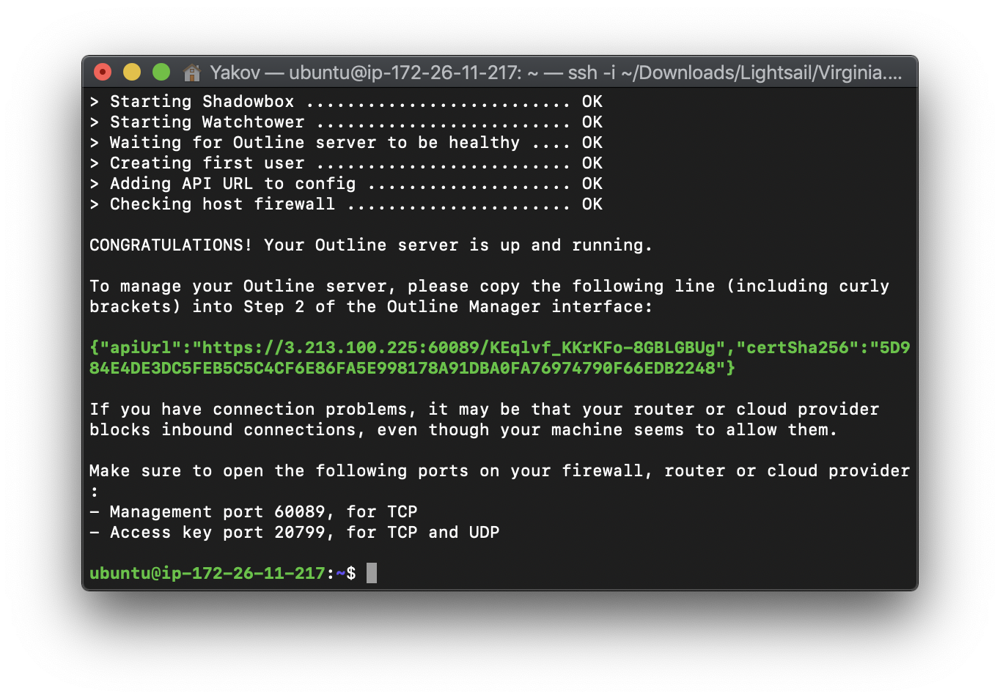
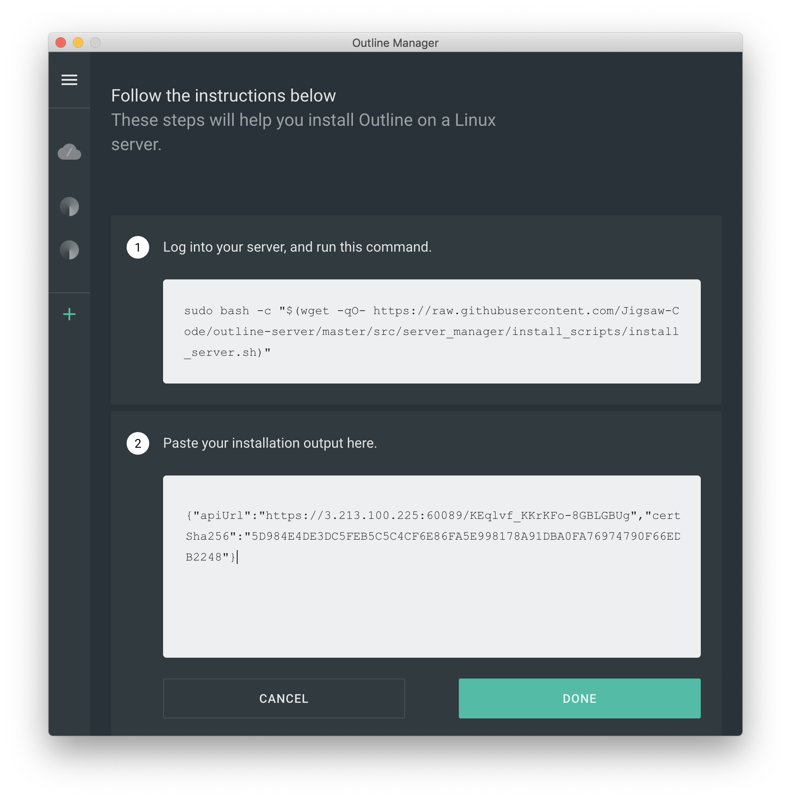

outline¶
使用¶
Install Outline¶
Note
这部分在server端执行
Install Docker:
$ sudo curl -sS https://get.docker.com/ | sh
Install and Configure Outline:
$ sudo bash -c "$(wget -qO- https://raw.githubusercontent.com/Jigsaw-Code/outline-server/master/src/server_manager/install_scripts/install_server.sh)"

Note
注意1: 记住类似{“apiUrl”:”https://52.88.xxx.xxx:13899/9Z7rw…xxxxx”,”certSha256”:”0615…A67C9A”}；注意2: 防火墙打开下面2个端口: 2.1 Management port 13899, for TCP, 2.2 Access key port 59170, for TCP and UDP
Install Outline Manager¶
从官网下载Outline Manager，打开

Note
这儿要把前面记住的{“apiUrl”…}拷贝过来点击完成，后面就能自己明白了
Install Outline Client¶
从官网下载Outline Client,使用就好了